Paired bin update. The quantized pair uses one packed addition, while LightGBM’s default accumulates each value separately.Separate and packed sums. Two additions on the left contrast with one addition of the packed pair on the right.

Histogram reuse. Integer sums combine across workers; both engines reuse parent histograms.
Serving

Leaf mask. The mask reveals the selected leaf and its value.

Threshold and leaf. The mask covers leaves excluded by the input.Rows together. A shared SIMD mask region selects a leaf for each row, and the kernel reads their values separately.